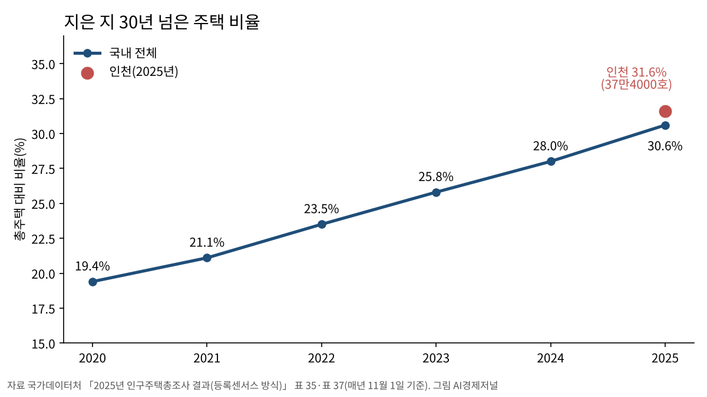

[기후위기] 난방비 5,042억원과 집 고칠 3만7,000가구
에너지바우처 144만 가구, 평균 35만원
단열·창호 공사 목표 3만7,000가구, 바우처 가구의 2.6%
인천 30년 넘은 주택 37만4,000호, 31.6%
기후에너지환경부가 2026년 11월 10일 국무회의 보고 안건인 범부처 겨울철 취약계층 보호대책의 하나로 에너지바우처 대책을 발표했다. 올해 에너지바우처는 144만 가구, 예산은 5,042억원이다. 같은 해 정부가 단열·창호·보일러를 고쳐 줄 난방 지원 목표는 3만7,000가구다. 경세제민 AI·경제 연구소이 바우처 가구 수와 난방 효율개선 목표를 맞대어 보니 39 대 1이다.

올겨울 바우처 144만 가구, 먼저 찾아가는 지원
에너지바우처는 기초생활수급가구 가운데 노인·영유아·장애인 등이 있는 가구의 냉·난방비를 덜어 주는 이용권이다. 기후에너지환경부는 지원 가구를 2025년 140만에서 2026년 144만으로 4만 가구 늘렸고, 예산은 4,815억원에서 5,042억원으로 227억원 늘렸다.
올겨울 대책의 줄기는 받을 사람을 먼저 찾아가는 것이다. 이사나 세대원 수 변경으로 지원이 끊긴 2만5,000여 가구에는 내년 3월까지 상담원이 전화로 동의를 받아 공무원이 다시 신청해 준다. 쪽방촌과 고시원처럼 월세에 에너지비용이 들어 있는 가구에는 11월부터 사전 신청한 약 5,300가구를 시작으로 난방비를 현금으로 미리 주기로 했다.
집배원과 사회복지사가 찾아가는 서비스도 넓혔다. 지난해에는 바우처를 한 푼도 쓰지 않은 5만9,000가구를 찾아가 약 99억원의 사용을 도왔다. 올해는 절반도 쓰지 않은 가구까지 넣어 최대 12만2,000가구를 찾아간다. 요금을 못 낸 수급자에게는 도시가스 공급 중단을 올해 10월부터 내년 5월까지 미루고, 전기 사용 제한은 12월부터 내년 2월까지 푼다.
등유 가구 51만4,000원, 두 해째 추가 지원
등유와 액화석유가스(LPG)로 난방하는 약 21만 가구에는 14만7,000원을 더 준다. 이들 가구의 평균 지원금은 36만7,000원에서 51만4,000원이 된다. 기후에너지환경부는 중동전쟁과 고환율로 오른 유가를 까닭으로 들었고, 추가 지원금은 12월 9일부터 국민행복카드로 들어갈 예정이다.
같은 추가 지원은 지난해 12월에도 있었다. 기후에너지환경부는 2025년 12월 29일 등유·LPG 가구의 평균 지원금을 36만7,000원에서 51만4,000원으로 늘린다고 발표했고, 2026년 1월 22일부터 추가 지원금을 쓸 선불카드를 행정복지센터에서 차례로 지급한다고 밝혔다. 등유·LPG 가구 추가 지원은 두 해 연속이다.
집 고칠 3만7,000가구, 바우처 가구의 2.6%
요금을 대는 바우처와 달리 집을 고치는 사업이 따로 있다. 저소득층 에너지효율개선사업이다. 기초생활수급가구와 차상위계층에 단열재 시공, 창호 교체, 바닥 공사, 낡은 보일러 교체를 지원한다. 정부가 밝힌 지원 규모는 가구당 평균 243만원, 최대 330만원이고 공사비는 전액 국비다.
기후에너지환경부는 2026년 3월 이 사업의 목표를 난방 3만7,000가구와 시설 15곳, 냉방 1만9,000가구와 시설 150곳으로 밝혔다. 연탄쿠폰을 받는 4만2,000가구 가운데 최대 1만 가구의 난방 연료를 바꾸는 데에도 이 사업을 잇는다. 정부는 연탄 사용 가구의 전환에 올해 1,086억원을 들인다고 했다.
경세제민 AI·경제 연구소이 바우처 예산 5,042억원을 144만 가구로 나누면 1가구에 약 35만원이다. 예산을 지원 가구 수로 나눈 단순 평균이다. 효율개선 한 가구의 평균 지원액 243만원은 바우처 약 7년치에 해당한다. 난방 효율개선 목표 3만7,000가구는 바우처 가구의 2.6%다.
오일영 기후에너지환경부 기후에너지정책실장은 1월 22일 현장 점검을 알린 보도자료에서 단열 공사와 창호 교체를 하면 에너지 효율이 20% 이상 좋아진다고 밝혔다.
효율개선을 받을 수 없는 가구도 있다. 주거급여의 수선유지급여를 받는 가구와 공공임대주택 거주 가구는 원칙적으로 빠진다. 최근 2년 안에 지원을 받았으면 다시 받는 것이 제한될 수 있고, 난방 지원은 예산이 다 떨어지면 신청을 받지 않는다.

에너지 빈곤이 머무는 자리, 낡은 집
에너지 빈곤의 뿌리가 집에 있다는 실증 결과가 있다. 이정민·김진석(2025)은 『보건사회연구』 45권 2호에서 한국복지패널 13~17차(2017~2021년) 자료로 바우처를 받은 가구주 1,127명을 패널로짓 임의효과 모형으로 분석했다. 에너지 빈곤은 연 광열비가 가처분소득의 10% 이상인 경우로 정했다.
분석 대상 가운데 에너지 빈곤 가구는 차수마다 25.3~29.8%, 평균 27.5%였다. 바우처를 받은 가구의 네 곳 중 한 곳 넘게 소득의 10% 이상을 광열비로 썼다.
주거유형이 아파트가 아닌 「주택」이면 에너지 빈곤의 승산비가 1.744, 연탄·기름 보일러를 쓰면 1.878, 튼튼한 영구 건물이 아니거나 내열·방습 재질이 아니라고 답하면 1.712였다. 저자들은 에너지복지를 비용 지원에서 주거환경의 에너지 효율을 높이는 지원으로 넓혀야 한다고 제언했다.
집수리가 비용만큼 절감을 내지 못했다는 실증 연구도 있다. 파울리·그린스톤·울프럼(Fowlie, Greenstone & Wolfram, 2018)은 미국 최대 주거용 효율 사업인 저소득층 단열 지원사업(WAP, Weatherization Assistance Program)을 3만여 가구 실험으로 평가했다. 투자비가 실제 절감액의 약 두 배였고, 공학 모형이 예측한 절감은 실제의 약 2.5배였다.
에너지경제연구원 수시연구보고서 25-02(2025)는 에너지복지 예산이 늘었는데도 한국에는 에너지 빈곤 해소를 위한 국가 차원의 중장기 전략과 공식 지표가 없다고 지적했다. 보고서는 유럽연합이 적정 실내온도 유지 곤란, 요금 연체 등 공통 핵심지표로 회원국의 에너지 빈곤을 관리한다고 소개하고, 2026년 예정된 에너지복지실태조사 문항으로 낼 수 있는 지표를 검토했다.
인천 30년 넘은 주택 37만4,000호
국가데이터처의 2025년 인구주택총조사(2026년 7월 28일 발표)에서 지은 지 30년 넘은 주택은 618만1,000호, 전체의 30.6%다. 표에 실린 2020년 이후 처음으로 30%를 넘었다. 2020년 19.4%에서 5년 새 11.2%포인트 올랐고, 한 해 동안에만 60만7,000호가 늘었다. 단독주택은 60.3%가 30년을 넘었다.
인천의 주택 118만6,000호 가운데 30년 넘은 집은 37만4,000호, 31.6%다. 국내 평균보다 1.0%포인트 높다. 인천은 지은 지 20년이 안 된 주택도 46.5%로 국내 평균 44.0%보다 많다. 새 집이 빠르게 늘어도 낡은 집의 비율은 국내 평균을 웃돈다.
인천광역시가 올해 직접 고치기로 한 집은 67가구다. 광역주거복지센터와 함께 하는 「희망의 집수리」 10가구와 「고령자 맞춤형 집수리」 57가구다. 희망의 집수리는 도배·장판과 함께 단열 보강, 창호와 설비 개선을 한다. 대상은 낡은 주택에 사는 중위소득 75% 이하 가구와 고령자다.

올해 정부가 집을 고쳐 주려는 가구는 바우처 가구의 2.6%이고, 인천시가 고치기로 한 집은 67가구다. 등유·LPG 가구의 추가 지원금은 12월 9일부터 국민행복카드로 들어갈 예정이다.
참고문헌
- 이정민·김진석(2025). 「에너지바우처 이용자의 취약한 주거환경과 에너지빈곤의 관계: 패널로짓 분석」. 『보건사회연구』 45(2), 517~542. doi:10.15709/hswr.2025.45.2.517
- Fowlie, M., Greenstone, M., & Wolfram, C.(2018). Do Energy Efficiency Investments Deliver? Evidence from the Weatherization Assistance Program. The Quarterly Journal of Economics, 133(3), 1597~1644. doi:10.1093/qje/qjy005
- 에너지경제연구원(2025). 『에너지빈곤 지표 비교분석 및 정책 활용방안 연구』(수시연구보고서 25-02, 연구책임자 이재석)
- 국가데이터처(2026.7.28). 「2025년 인구주택총조사 결과(등록센서스 방식)」 보도자료
- 기후에너지환경부(2026.11.10). 「올겨울, 먼저 찾아가는 에너지바우처로 따뜻한 겨울나기를 지원합니다」 보도자료
- 기후에너지환경부(2026.3.2). 「취약계층 연탄사용가구 고효율 에너지로 전환 지원」 보도자료(정책브리핑 2026.3.3 게재)
- 기후에너지환경부(2026.1.22). 「난방 걱정 덜도록… 기후부, 취약계층 에너지복지 지원 현장 점검」 보도자료
- 기후에너지환경부(2025.12.29). 「에너지바우처 등유 및 액화석유가스 사용 수급 가구에 지원금 51.4만원으로 확대」 보도자료
- 정책브리핑 『K-공감』(2026.10.22). 「겨울 난방비 걱정? 단열·창호·보일러 최대 330만 원 지원받으세요」
- 인천광역시(2026.4.8). 「인천시, 주거취약계층 집수리 지원사업 추진」 보도자료
[사진 출처]
- [사진 1] 인천광역시 보도자료 「인천시, 취약계층 주거환경 개선‘환경보건 안심집’30가구 조성 완료」(2026년 9월 21일) 첨부 사진, https://www.incheon.go.kr/IC010205/view?repSeq=DOM_0000000015592116
© 경세제민 AI·경제 연구소. 인용할 때는 출처를 밝혀 주십시오.